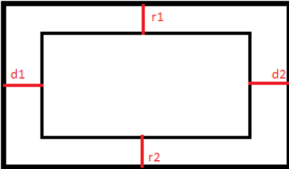

JS:
1. Set Canvas height and width.
2. Set its context to be in 2 dimensions.
3. Draw a rectangle using the mouse coordinates as final point of it, so make it dynamic and changeable.
4. The value of the rectangle are first converted from px to cm and then from cm to meter using a scale
1:50 by default, but the user can still decide to have a 1:25 scale which allows him/her to have a bigger
room with a different value in m.
5. If the user clicks into the area assigned for drawing, a banner will check if the click was by mistake or
not.
6. If the user has finally decided the rectangle final points are not mouse coordinates anymore but are
fixed value from now on. Otherwise it will just go back to the size decision.
7. The menu on the right is half hided while the user is deciding.
8. The rectangle itself is centered by calculating
the distance between the canvas and the room itself,
once the two distances are equal the rectangle stops
moving.
(Eg: when r1 = r2 && d1 = d2, set the speed that was
pushing my rectangle to 0)
9. Once the user has decided the white rectangle that was covering the bottom side of the menu will be
removed and the menu is now fully displayed.
10. The user can decide to choose the color of the floor, if it is a color it will be accomplished by drawing a
rectangle of the same size of the room, if it’s an image it will be displayed at 0,0 of the ROOM with
H&W same as the room.
11. Going down on the menu we will see four buttons that highlight when the mouse is on it, this is a kind
of tile based menu, but is really accomplished and drawn by creating an object and changin this.color to
a different one everytime is on a tile.
The four tile are drawn with a four loop, since just one is initialised in the object function.
From now one it gets more complicated:
Basically in order to handle 20 pictures of furniture, display them and store them I’ve been trough a
lot of trouble.
This is the logic:
12. All the images are stored in one big array, with no differentiation between what kind of forniture that
is.
13. Then a object function is created and some parameters (as width, height, id ecc.) are set.
14. A draw function is called for the object
15. Then if the kitchen is clicked (let’s say clicked = 1), this.draw will draw all the images looping trough
each id, everytime the id changes, the image.src changes as well and another image is displayed spaced
by a variable value.
16. So it happens everytime another button is clicked.
17. The cool thing is that everytime I loop through a series of image (eg. All the kitchens objects) I also push
all the elements displayed in that case (clicked = 1 || 2 || 3 || 4) in other four different arays (Kitchen,